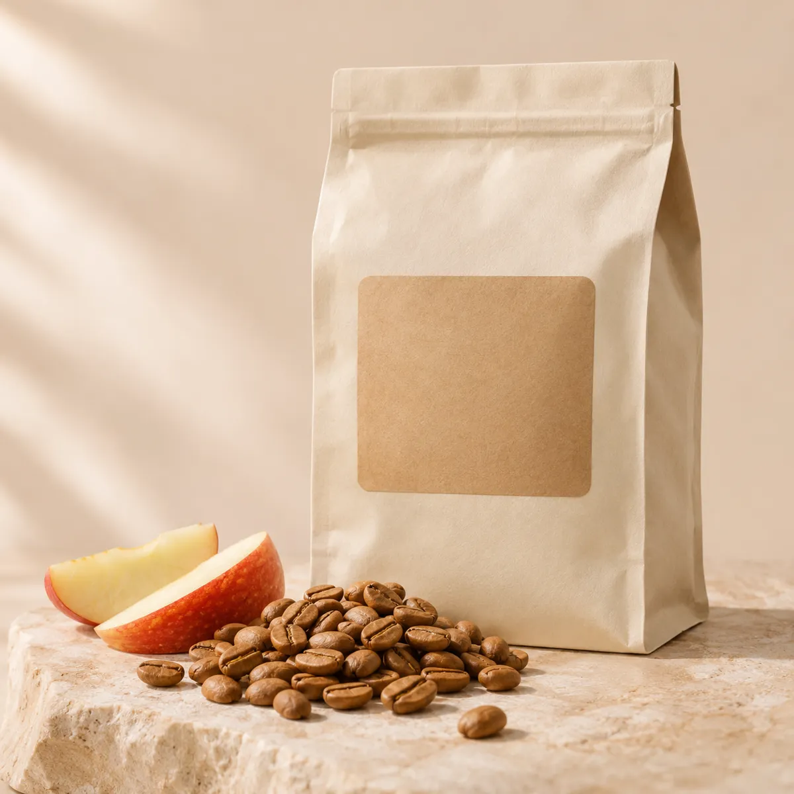
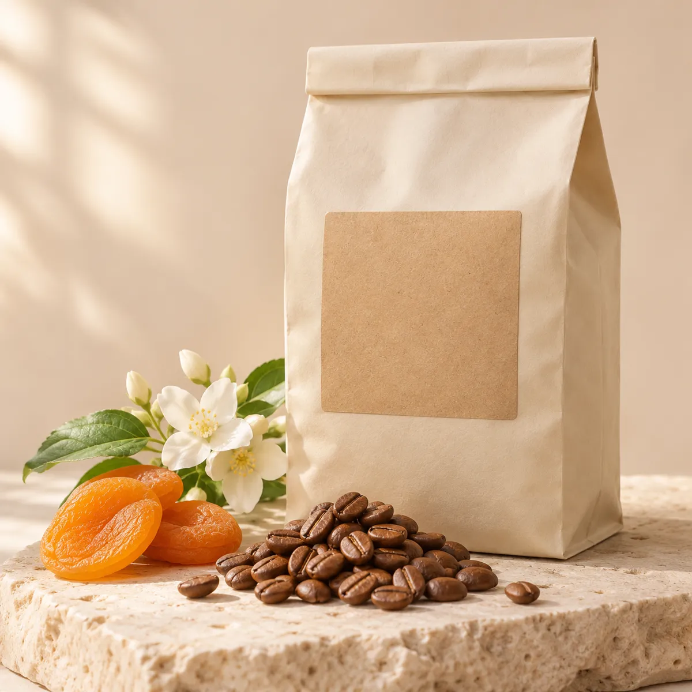
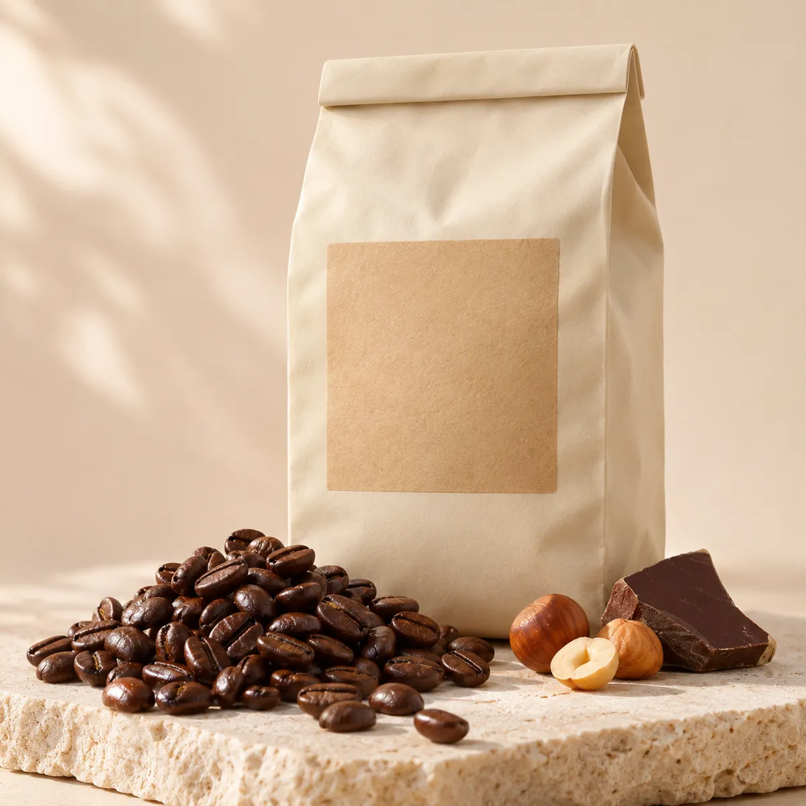
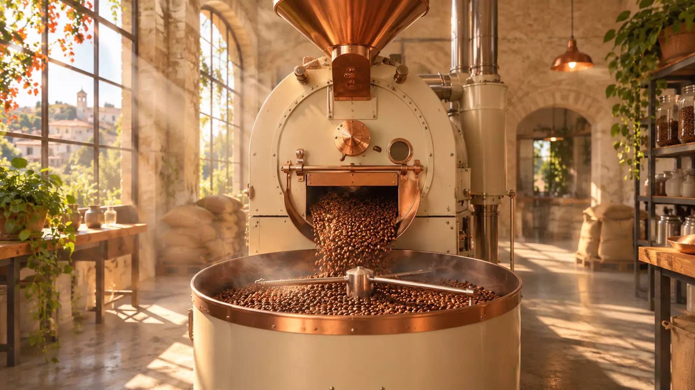
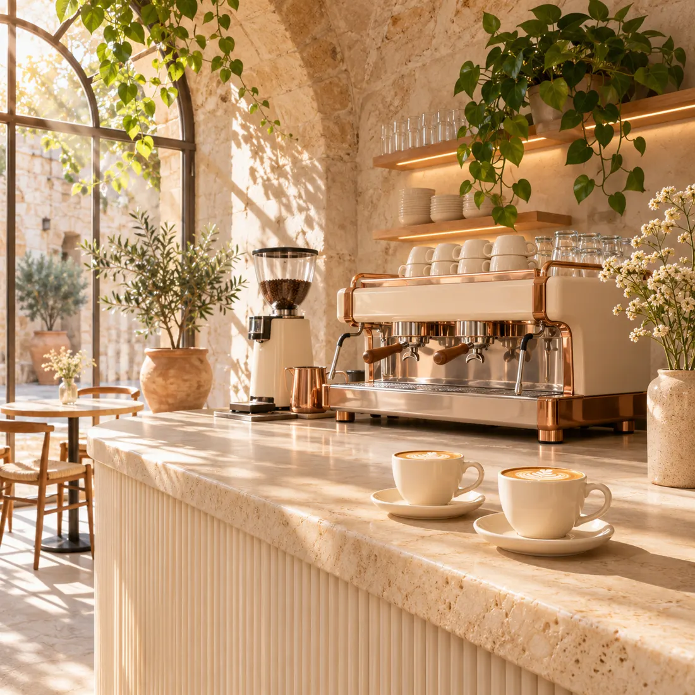

From one treeto your cup.
Single-farm coffee, roasted in Esslingen every Tuesday and Friday.
Order this week's beansPicked only
when red.
Our farmers in Huila and Sidamo pick by hand, one ripe cherry at a time.
One seed,
two halves.
Inside every cherry sits the green coffee bean.
Twelve minutes
in the drum.
We roast twice a week, every Tuesday and Friday.
In a back
courtyard.
In Esslingen's old town. The whole street smells of it.
Then it's
yours.
Dated on every bag, so you know how fresh it is.
Most coffee waits months on a shelf. Ours leaves the drum on Tuesday and is in your grinder by Thursday.
01 / 06
- A ripe cherry. It only gets picked when it's this red.
- Two halves of sweet fruit. The seed sits in the middle.
- The green bean. Grassy and hard, nothing like coffee yet.
- Twelve minutes at 200 degrees. Now it smells like coffee.
- Ground right before brewing, never earlier.
- Twenty-five seconds later: espresso.
This week's
coffees.
Three coffees, roasted on Tuesday, shipped by Thursday.
-

Huila
€14 / 250 gRed apple, panela, a clean finish.
-

Sidamo
€16 / 250 gJasmine, apricot, black tea.
-

Kernglut
€13 / 250 gDark chocolate, hazelnut, thick crema.
Taste it where
it's roasted.


- Where
- Am Röstplatz
Esslingen old town - Espresso bar
- Tue–Fri 8–17
Sat 9–15 - Roast days
- Tuesday and Friday.
Come by and watch.